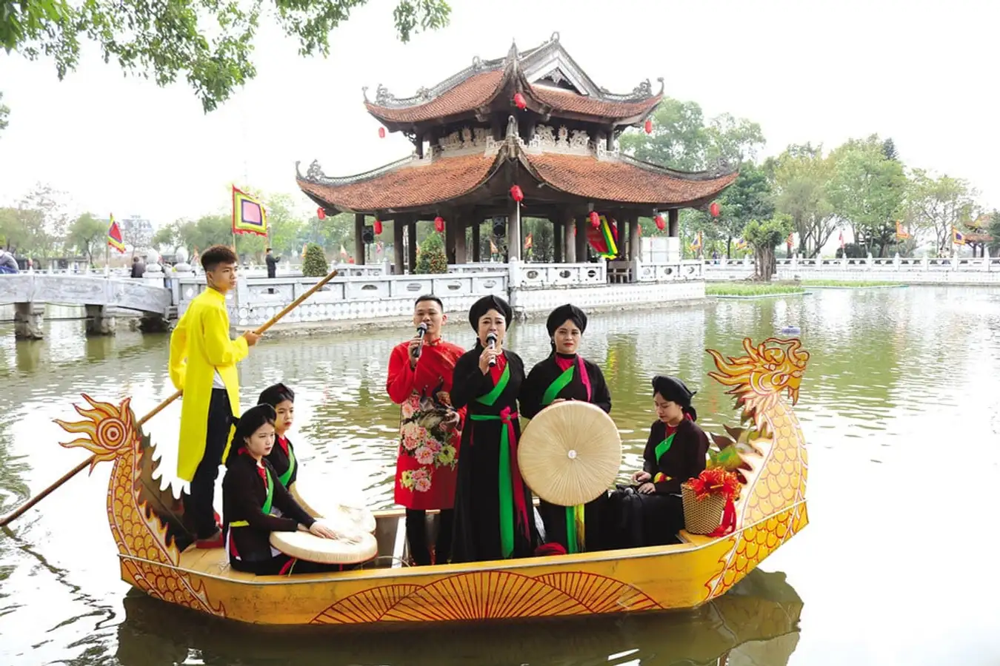

HELLO, IT'S NICE TO MEET YOU

Bắc Ninh nằm ở vùng Đồng bằng sông Hồng, phía bắc Việt Nam, và là tỉnh nhỏ nhất về diện tích nhưng có vị trí địa lý quan trọng. Phía bắc giáp tỉnh Bắc Giang, phía đông giáp tỉnh Hải Dương, phía nam giáp tỉnh Hưng Yên và thủ đô Hà Nội, phía tây giáp Hà Nội. Với diện tích khoảng 822,7 km², Bắc Ninh có hệ thống giao thông thuận lợi, bao gồm quốc lộ và tuyến đường sắt quan trọng, kết nối dễ dàng với các tỉnh thành lân cận và các khu vực kinh tế trọng điểm. Vị trí địa lý này giúp Bắc Ninh phát triển mạnh mẽ về kinh tế, đặc biệt trong lĩnh vực công nghiệp và dịch vụ, đồng thời cũng là cửa ngõ giao thương quan trọng của vùng kinh tế trọng điểm Bắc Bộ.
Bắc Ninh có bề dày lịch sử và văn hóa phong phú, là cái nôi của nền văn minh lúa nước và văn hóa Kinh Bắc cổ xưa. Từ thời kỳ Hùng Vương dựng nước, Bắc Ninh đã là vùng đất quan trọng. Thời kỳ phong kiến, đây là trung tâm văn hóa, kinh tế và giáo dục của Đại Việt với nhiều danh nhân và di tích lịch sử nổi tiếng. Bắc Ninh cũng là nơi phát tích của nhiều vị vua, hoàng hậu và danh tướng nổi tiếng. Vùng đất này còn được biết đến với truyền thống khoa bảng, là quê hương của nhiều trạng nguyên và tiến sĩ. Trong thời kỳ kháng chiến chống Pháp và chống Mỹ, Bắc Ninh có những đóng góp to lớn cho sự nghiệp giải phóng dân tộc. Ngày nay, với sự phát triển mạnh mẽ về kinh tế, Bắc Ninh tiếp tục khẳng định vị thế quan trọng của mình trong khu vực, đồng thời bảo tồn và phát huy giá trị văn hóa truyền thống đặc sắc.
Văn hóa ẩm thực Bắc Ninh là sự kết hợp tinh tế giữa các món ăn dân dã và những đặc sản độc đáo, mang đậm nét truyền thống vùng Kinh Bắc. Nổi bật nhất là món nem Bùi, với hương vị thơm ngon, giòn rụm, được làm từ thịt lợn tươi, thính và lá sung. Bánh phu thê Đình Bảng cũng là một đặc sản nổi tiếng, thường xuất hiện trong các dịp lễ cưới hỏi, mang ý nghĩa tượng trưng cho tình yêu và sự thủy chung. Bên cạnh đó, bánh khúc làng Diềm và cháo cá Tích Nghi là những món ăn dân dã, giản dị nhưng đậm đà, gắn liền với đời sống hàng ngày của người dân nơi đây. Ẩm thực Bắc Ninh không chỉ ngon miệng mà còn thể hiện sự tinh tế và phong phú của văn hóa vùng đất cổ kính này.
Chỉ cần một lần đặt chân đến mảnh đất Bắc Ninh, mọi du khách đều sẽ bị mê hoặc bởi thiên nhiên núi rừng hùng vĩ, con người thân thiện và nhiều món ăn hấp dẫn.
Và điều mà nhiều du khách cảm thấy tò mò nhất chắc hẳn là đặc sản Bắc Ninh phải không nào? Vậy vùng đất Bắc Bộ này có những món ăn nào hấp dẫn du khách.
Hãy để VN Foods giúp bạn hiểu hơn về văn hoá ẩm thực nơi đây nhé!